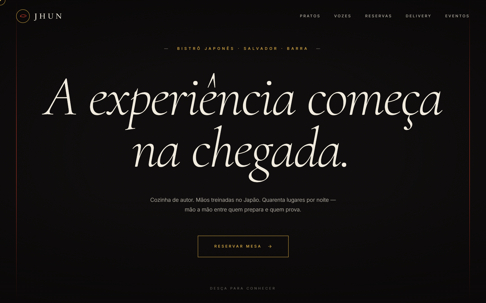
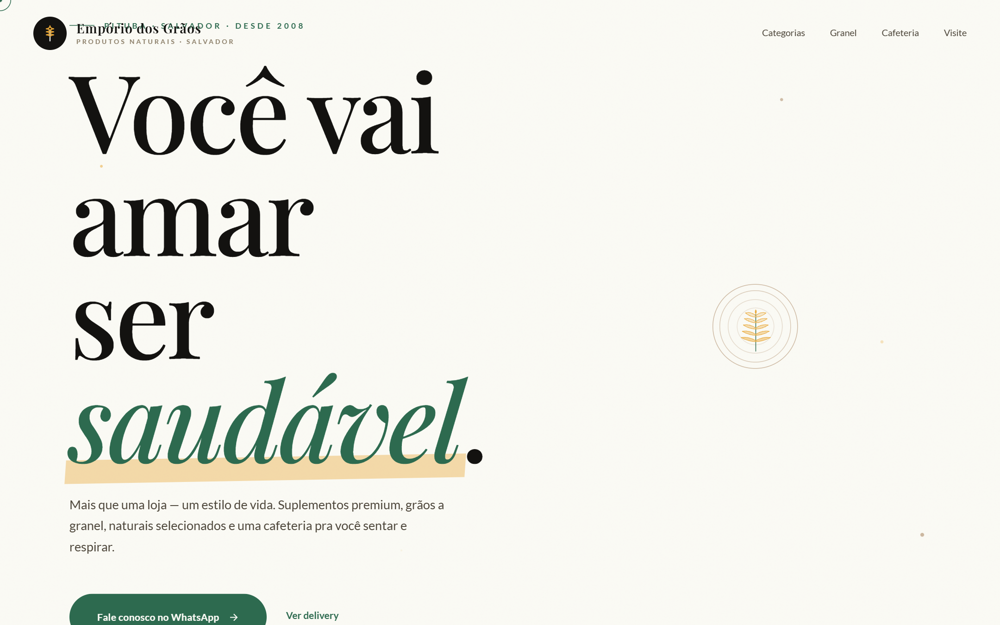
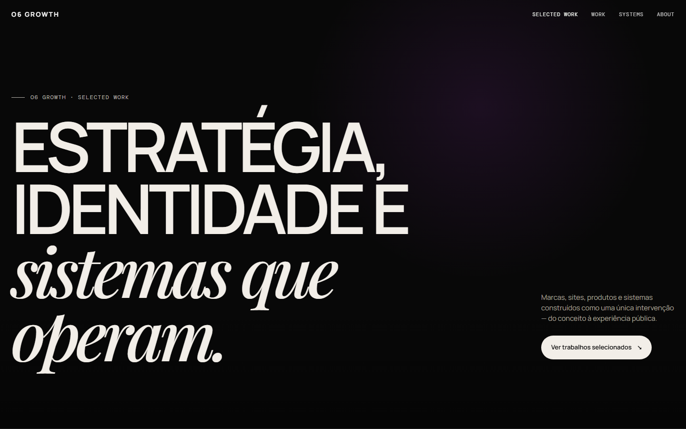

O6 GROWTH01 / 07
Apresentação
Uma ideia só cresce quando ganha forma.
Comunicação e produção digital para empresas.

JHUN BISTRÔ
EMPÓRIO DOS GRÃOSESTRATÉGIA / CRIAÇÃO / EXECUÇÃOARRASTE →
O6 GROWTH02 / 07
O problema
Seu negócio pode ser bom e ainda parecer confuso.
INSTAGRAM“Somos para todos.”Sem público claro.
SITE“Soluções completas.”Sem dizer o que faz.
CONVERSA“Peça um orçamento.”Sem próximo passo.
Mais peças não resolvem uma mensagem desencontrada.
EXEMPLO ILUSTRATIVO02 / 07
O6 GROWTH03 / 07
Nossa direção
Antes da peça, uma linha de raciocínio.
01Quem precisa entender?→
02Qual problema resolvemos?→
03Qual é o próximo passo?→
Dessas respostas nasce uma comunicação coerente.
PÚBLICO / OFERTA / AÇÃO03 / 07
O6 GROWTH04 / 07
Da direção à entrega
Estratégia que vira algo utilizável.
Identidade, sites, campanhas, vídeos, dashboards e automações.

CAPTURA REAL DO SITE O604 / 07
O6 GROWTH05 / 07
Portfólio
Projetos diferentes pedem linguagens próprias.
EDITORIAL / HOSPITALIDADE
VAREJO / BEM-ESTAR
DEMOS DESENVOLVIDAS PELA O605 / 07
O6 GROWTH06 / 07
Como começar
O formato segue a necessidade.
01Diagnóstico: entender o cenário
02Sprint: executar uma entrega definida
03Acompanhamento: produzir em ciclos
A conversa inicial ajuda a escolher o caminho adequado.
ESCOPO DEFINIDO EM CADA PROJETO06 / 07
O6 GROWTH07 / 07
Nosso primeiro projeto
Aplicamos esse processo na própria O6.

Site, portfólio e primeiros conteúdos: mostramos o trabalho conforme fica pronto.
Vamos conversar ↗
O6 GROWTH07 / 07